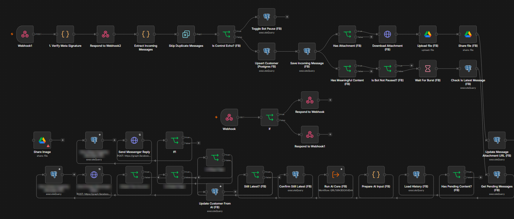
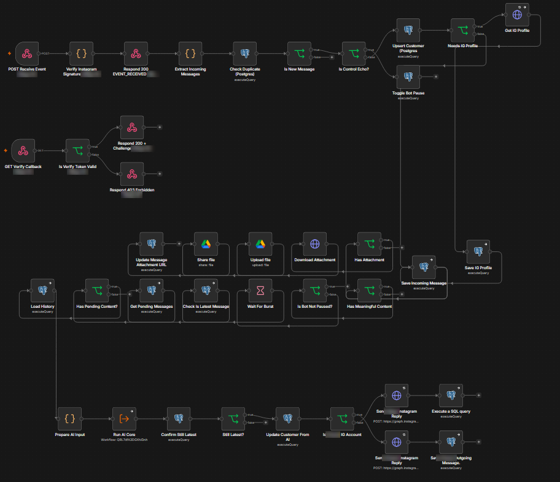

AI Automation Specialist building smart n8n workflows for businesses
I build workflows that take repetitive work off a team's plate: they connect the tools a business already uses, move data automatically, and use AI agents to understand requests and decide what happens next, with a person kept in control.
End-to-end workflows that connect apps, APIs and databases, so data moves without copy-paste.
Agents that read messages, understand context, and respond or route the work to the right person.
Chat assistants with conversation memory that know when to answer and when to hand over to your team.
Saving records, organizing files and keeping systems updated as part of the same flow.
The challenge. Customers message in bursts, send product photos, and expect quick answers, while serious leads still need a salesperson.
The solution. Two n8n workflows, one per platform, that receive every message securely, remember each customer, wait until the customer finishes typing, reply with an AI agent, and hand the conversation to a salesperson when needed.
Completes Meta's webhook handshake, checks the signature on every incoming message, and blocks duplicates.
Stores every customer and message, fetches Instagram profile names, and archives photos to Google Drive.
The team types one keyword in the chat to pause the bot, and another to resume it.
Waits for the customer to finish, then answers all of their messages in one reply.
Sends recent history and photos to the AI agent, and marks where a new day's conversation starts.
Checks that no newer message arrived before sending, replies from the right account, and falls back to a default reply if the AI fails.
Saves the name, phone, area, product and size the AI extracted, and flags conversations a salesperson should take over.


Account names in the screenshots are blurred.
Computer Science, Cairo University. Over 10 years working remotely with agencies, studios and international clients as a senior graphic designer, so remote collaboration and clear communication are part of how I work.
I'm open to remote roles in workflow automation and AI automation with n8n.